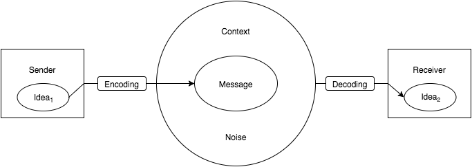
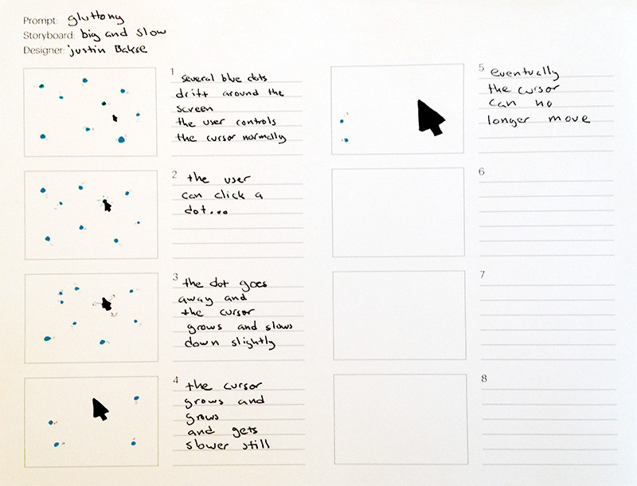

A core issue in interactive work is how the viewer affects their experience. In non-interactive works, the viewer does not influence form of the work; what the viewer sees and hears is decided when the work is created. In interactive works, the viewer makes choices that influence — or even contribute to — what they see and experience.
One of the key things to consider when designing or criticizing an interactive project is what options and choices are presented to — and withheld from — the user.
If you believe that (1) communication is an essential component to art/design, and (2) that communication is inherently interactive, then all mediums of art/design are arguably interactive to some extent. We tend to call a work interactive only when the the user’s actions and choices are an intentional, substantial consideration of the artist.
Is a painting interactive? A movie? A video game? A concert?
There are many models of communication. Below is a simplfied model for how communication works with traditional (non-interactive) forms like paintings, posters, and public speaking.

When communicating, what you say is an important factor in what the audience hears. It is important to recognize, especially for designers, that how you say it is at least as important.
I didn’t say she stole it.
I didn’t say she stole it.
I didn’t say she stole it.
I didn’t say she stole it.
I didn’t say she stole it.
I didn’t say she stole it.
I didn’t say she stole it.
Take, as an example, a designing a poster:
What font do you use? Futura? Times? Comic Sans?
What kind of image do you use? Photo? Illustration? Pure type?
How big is it? 8"x11"? 11"x17"? 11"x11"? 24"x36"? 96"48"
What kind of paper do you use? 80 lb card stock? ruled loose-leaf? hot-pink Astrobright? 20 lb copier paper?
How do you print it? Black and White Laser? Color Laser? Inkjet? Markers? Screen print?
These decisions each have a major impact on how the audience interprets the meaning of your poster.
You can’t opt out of context.
If you don’t choose a font, there is still a font.
If you don’t include an image, your poster will be purely typographic.
The poster will be some size, on some kind of paper, and printed in some way. It doesn’t matter if you choose these things with purpose or out of convenience, the audience will consider them when they see your poster.
Interaction a powerful tool expression.
We present the user with options, they make choices, and our systems react.
Interactive media demands a high level of engagement and participation from a user. It is an active media that recruits the viewer, making them an element in the work. We can build on this aspect of interactive media to create powerful emotional experiences. Consider the difference between seeing and being. Shovelknight
Interactive media encourages the user to discover rather than interpret. With interactive media, the viewer can try things and see what happens. This is a powerful process that can be used to inform, educate, and persuade. SimLife
One of the most powerful aspects of interactive works is that the audience can shape the work. Highly interactive applications become tools for expression themselves. Facebook, Photoshop, and Mario Maker
Interaction Charades is a design exercise very loosely based on Charades, in that you attempt to convey a specific, secret prompt while limited in how you may communicate.
Constraints:
You will design and describe an interactive system that conveys the prompt.
You must describe only what the user does and how the system reacts. Don’t describe how the user feels, or why they act.
Your system can use only the following elements: The arrow cursor, rectangles, circles, and triangles. Do not combine these elements to create representational figures. You don’t need to use all of the elements. You do not need to use the cursor. You can have more than one cursor.
You can use the following colors for the figures: black, red, and blue. The background is white. Do not use colors for their cultural meanings.
Assume the user will interact by moving their mouse and pressing the mouse button. The user must be able to interact in some way, and this interaction should be core to the meaning.
Considerations:
You will be given 3 prompts. For each prompt, concept and storyboard at least 3 interactive experiences following the constraints of the Interaction Charades exercise.
Print and use the storyboard templates. You will also need some fine point Sharpies/markers (black, red, and blue); a pencil, and writing pen. Use the Sharpies to draw the elements in your interaction. Use the pencil to draw arrows and other didactic marks needed to explain motion. Use the pen to write notes about each frame. Create your storyboards on paper, not on a computer.
The first frame of each storyboard should show how the scene would look when before the user begins to interact. Depending on your interaction, you may want to have a second frame showing what happens if the use waits before interactiong. Use pairs of frames to describe an action taken by the user, and the results of the action.
Consider these as general guidelines: some ideas may require a different structure, or more or less frames. Use one page per concept.
Take time to make your sketches neat and clear. Provide written notes to explain each frame; the visual and written parts should support each other. Your storyboards should communicate your idea on their own, without additional explanation.
You will have 9 (or more) total story boards when you are done. Make sure each is clearly labeled with your name, the prompt, and the storyboard title. Bring them to class in a folder, also clearly labeled with your name, that you will turn in.

{kind=link}